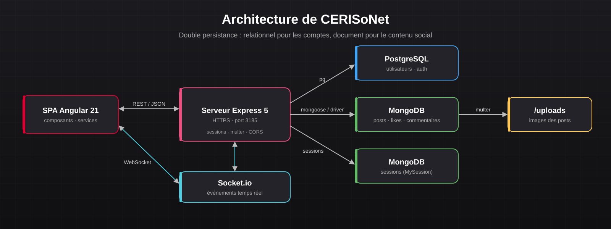
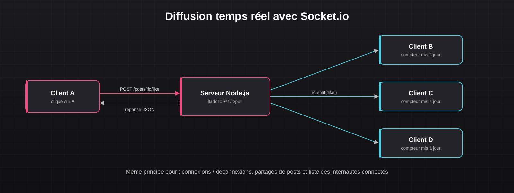

Projet 15 : CERISoNet
Réseau social du CERI : SPA Angular connectée à une API Node.js/Express en HTTPS, double persistance PostgreSQL + MongoDB et interactions en temps réel via WebSocket.



À propos du projet
CERISoNet est un réseau social complet développé pour les étudiants du CERI. Il est construit comme une Single Page Application Angular qui dialogue avec une API REST Node.js/Express servie en HTTPS.
L'application repose sur une double persistance : les comptes utilisateurs et l'authentification sont gérés dans PostgreSQL, tandis que le contenu social (publications, likes, commentaires, partages) et les sessions sont stockés dans MongoDB. Les interactions sont propagées instantanément à tous les internautes connectés grâce à Socket.io.
Le projet a été mené en quatre étapes incrémentales : serveur HTTPS, connexion et mur d'accueil, gestion des publications, puis fonctionnalités avancées (tri, filtres, partage, temps réel, responsive).
Fonctionnalités développées
- Connexion / déconnexion avec vérification du mot de passe hashé et sessions persistées dans MongoDB
- Mur d'accueil avec scroll infini (pagination offset / limit)
- Publication de posts : texte, upload d'image (multer) ou URL externe, détection automatique des hashtags
- Likes (opérations atomiques
$addToSet/$pull) et commentaires avec résolution des pseudos - Tri par date, popularité ou auteur et filtres (mes posts, tous, par hashtag)
- Partage de publications avec affichage du post original
- Notifications temps réel : connexions / déconnexions, likes, partages et liste des internautes connectés
- Interface responsive (media queries) pour mobile
Compétences développées :
- Développement d'une SPA Angular (composants, services, routage)
- Conception d'une API REST Node.js / Express sécurisée en HTTPS
- Modélisation hybride relationnel (PostgreSQL) / document (MongoDB)
- Gestion des sessions côté serveur et de l'authentification
- Communication bidirectionnelle temps réel avec WebSocket (Socket.io)
- Gestion de l'upload de fichiers et des contenus multimédias